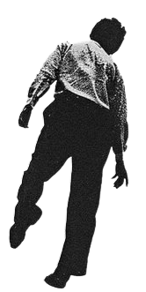
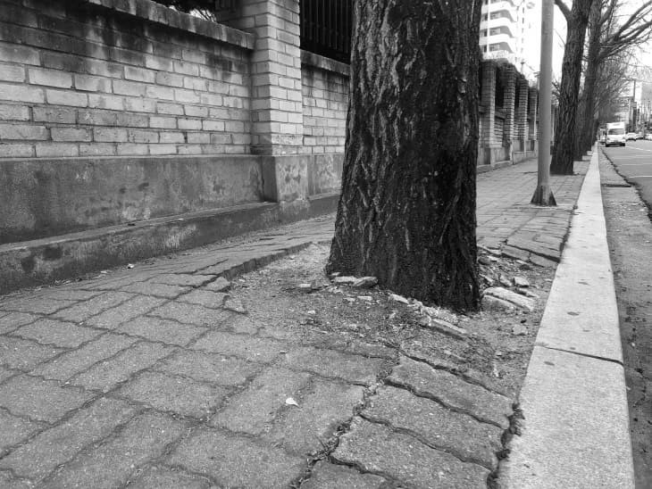
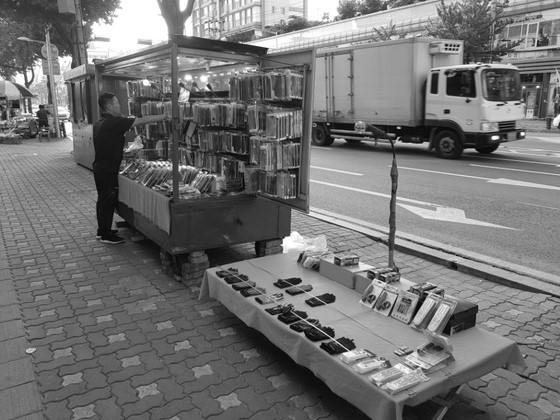
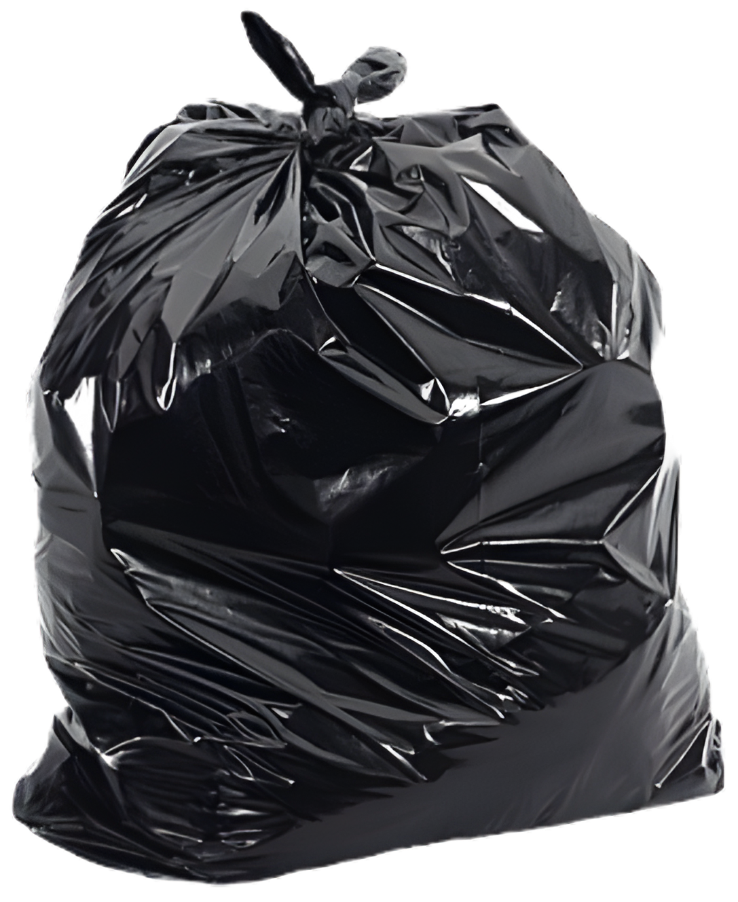

씹같은련


씹같은련

도로의 92%는 자동차를 위한 곳
「도로의 구조·시설 기준에 관한 규칙」
제16조(보도) 3항: 보도의 유효폭은 보행자의 통행량과
보행자의 행태 등을 고려하여 결정하되, 최소
2미터 이상으로 하여야 한다.
다만, 지형 상황으로
인하여 부득이한
경우에는
1.5미터
이상
으로
할
수
있
다

도로법」 제61조(도로의 점용) 및 제75조(도로의 금지행위):도로(인도 포함)를
점용하려면 반드시 지자체의



「옥외광고물 등의 관리 및 옥외광고산업 진흥에 관한 법률」 제3조 및 제5조: 지정된 게시대가 아닌 인도, 가로수, 신호등, 가드레일에 무단으로 설치된 현수막과 입간판은 모두 불법 광고물입니다. 통행 안전을 해칠 우려가 있는 경우 즉시 수거조치 및 과태료 처분을 받게 됩니다.
우산을 펼치기만 해도
한 사람이 차지하는 면적은
3배가 됩니다.